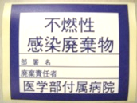
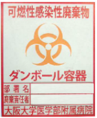
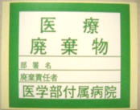
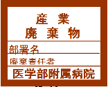
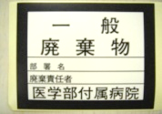
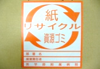
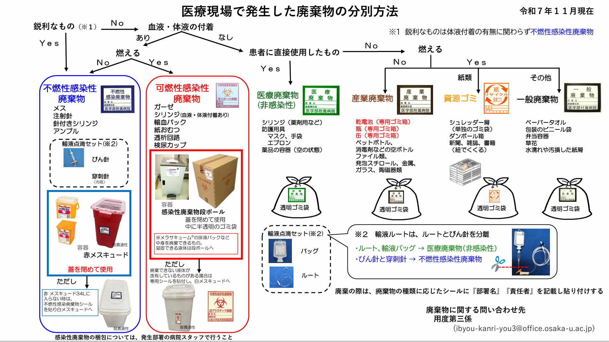

Ⅶ. 院内環境整備
2. 廃棄物について
廃棄物を扱う場合は適切にPPEを使用する。
廃棄の際は、廃棄物の種類に応じたシールに「部署名」「責任者」を記載し貼付する。
種類 | 対象物 | 廃棄容器 | 注意事項 | 最終処理 |
不燃性感染性廃棄物  | 鋭利なもの メス、注射針、針付きシリンジ、アンプル、輸液点滴セットのうち、びん針と穿刺針（せんししん） ※未使用のものを含む | 耐貫通性の指定されたもの ・シャープスコレクター34L ※専用架台を使用 ・シャープセイフ1ℓ・2ℓ 青（不燃性感染性廃棄物）シールを貼付 |
| 溶融 ↓ 鉄や路盤材に再生 |
可燃性感染性廃棄物  | 体液が付着した可燃性のもの ガーゼ、シリンジ、輸血バッグ、紙おむつ、透析回路、検尿カップ ※その他感染性のプラスチック類全般 | 専用段ボール内に半透明ビニール袋
【廃棄物の量が少ない場合】
|
| 焼却 |
 医療廃棄物 | 体液の付着がないもので患者に使用したもの 薬剤用シリンジ、防護用具、薬品容器、輸液点滴セットのうち、輸液バックとルート | 透明ビニール袋 緑（医療廃棄物）シールを貼付 |
| 焼却･溶融 ↓ 金属や路盤材等に再生 |
産業廃棄物  | 乾電池、缶・瓶・ペットボトル、消毒剤などのボトル、その他プラスチック・金属・ガラス・陶磁器類 | 透明ビニール袋 茶色（産業廃棄物）シールを貼付 |
| 再生・ 焼却・ 埋立 |
一般廃棄物  | ペーパータオル、包装のビニール袋、弁当容器、草花、紙屑等、一般的な可燃ゴミ | 透明ビニール袋 黒（一般廃棄物）シールを貼付 | 焼却 | |
 資源ゴミ | 紙、段ボール、書籍など シュレッダー屑 | 透明ビニール袋 オレンジ（資源ゴミ）シールを貼付 |
| 売却 |
作成：管理課用度第三係
